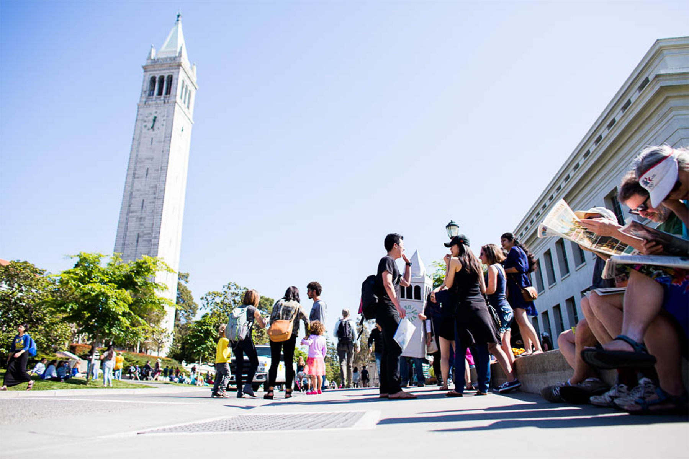

<!DOCTYPE html>
<html>

    <head>

        <meta charset="utf-8" />

        <title>
            UCBE Timeline
        </title>

        <meta name="description" content="UC Berkeley Extension 130-years time line website
        Collaborative text project" />

        <meta name="author" content="Megan Braun" />


<link rel="stylesheet" href="./Assets/CSS/styles.css" />

    </head>

</html>

<body>
    <div class="position-parent">
         
        <div class="position-child-one">Homepage</div>
        <div class="position-child-two">Timeline</div>
        <div class="position-child-three">2021</div>
    </div>
</body>

<body>

    <header>

    

    <nav>
        <ul>

            <li>
                <a href="/" >Homepage</a>
            </li>

            <li>
                <a href="Timeline-1891-1910.html" >Timeline</a>
            </li>

            <li>
                <a href="2021.html" >2021</a>
            </li>

        </ul>
    </nav>

    </header>

    <div class="corner-demo-box simple-rounded-homepage-1">Video Rounded Box.</div>


    <h1>Our Roots</h1>

    <article>
        In 1891, Berkeley faculty started teaching courses in history, philosophy, mathematics and
        English to the public in San Francisco, with great success (over 800 learners in the first fall
        semester). This initiative came to life as a reaction to calls from the Californian people to
        make the university’s education offerings more accessible and to fully embrace its mission
        as a land grant university. Indeed, until today, the University of California is bound “to serve
        society as a center of higher learning, providing long-term societal benefits through
        transmitting advanced knowledge, discovering new knowledge, and functioning as an
        active working repository of organized knowledge” 1 . For the founders of the university’s
        Extension, this mission meant providing access to learners of all ages and as a
        consequence, they pioneered the uniquely American concept of lifelong learning through
        continuing education. In fact, the name of ‘lifelong learning’ was coined by one of
        Extension's first deans, Sean J. Richardson.
        The reason for the creation of the University of California as well as its Extension in the late
        19th century, was to accelerate the economic development of California to catch up with
        the roaring industrialization on the East Coast (Picture 1). However, before Extension was
        born, the university consisted only of a few posh buildings and a theater on a remote hill, in
        the vicinity of the sleepy East Bay town of Berkeley (Picture 2). Privileged sons and
        daughters of wealthy families were studying and preparing themselves for high level
        positions in research, politics, public administration, and business. With the idea to give
        access to its excellent educational offerings to people of all ages, who would attend a single
        course at a time, while working, Extension breached the gap of academia and professional
        world, and created one the most advanced and successful continuing education
        department in history.
    </div>

    

    

    

        <div class="corner-demo-box simple-rounded-homepage-2">Image 1 Box</div>

        <div class="corner-demo-box simple-rounded-homepage-2">Image 2 Box</div>

        <div class="corner-demo-box simple-rounded-homepage-2">Image 3 Box</div>

    <h1>Our Reach</h1>

    <p>
        The central concept of Extension, as envisioned by it’s first proponents, notably the two UC
        Presidents, Edward S. Holden and Horace Davis, has always been the accessibility to the
        courses offered by our instructors. Consequently, Extension courses took place where the
        learners worked and lived, not on the remote campus in Berkeley. After the immediate
        success of its first courses, the regents officially adopted an extramural instruction plan
        that formally established the University Extension on Valentine’s Day, February 14, 1893.
        The concept of accessibility and the willingness to go towards the learners led Extension to
        constantly innovate new ways of reaching learners, for example, in 1928 Extension teaches
        on commuter trains, in 1945 Extension taught over 26,000 learners via its correspondence
        courses, in 1994 Extension ventures into online education and in 2012 Extension creates
        the UC’s first online course production department BRCO.
        Today, in part due to the global pandemic, Extension has developed the capacity to reach
        learners beyond the bay area with live instruction. Learners from anywhere in the world
        are now able to join our courses and we can help them, to launch or change their careers,
        to support their families, and share their knowledge and the Berkeley mindset.
    </p>

 <footer> 

        

        1995 University Ave. Berkeley, CA 94704-700 extension@berkeley.edu

    <a href="https://www.facebook.com/UCBerkeleyExtension/">Facebook</a>

    <a href="https://www.instagram.com/ucberkeleyext/">Instagram</a>

    <a href="https://www.linkedin.com/school/ucberkeleyextension/">LinkedIn</a>

    <a href="https://www.youtube.com/channel/UC20sZe5RHww1skkZmDdHC-w">Youtube</a>

    <a href="https://twitter.com/UCBerkeleyExt">Facebook</a>

</footer>

</body>
